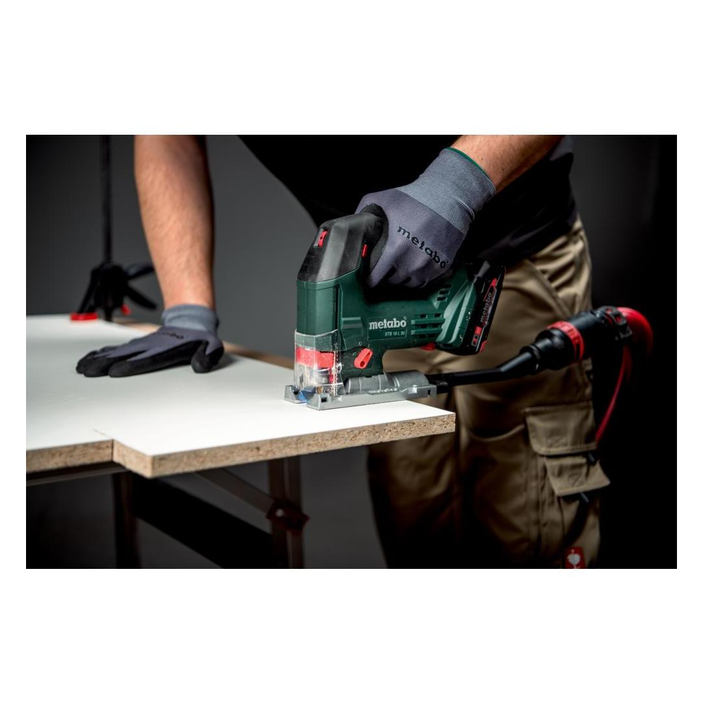
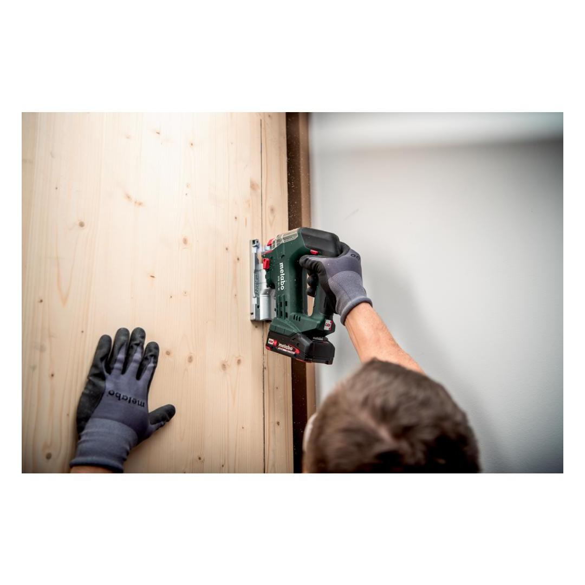
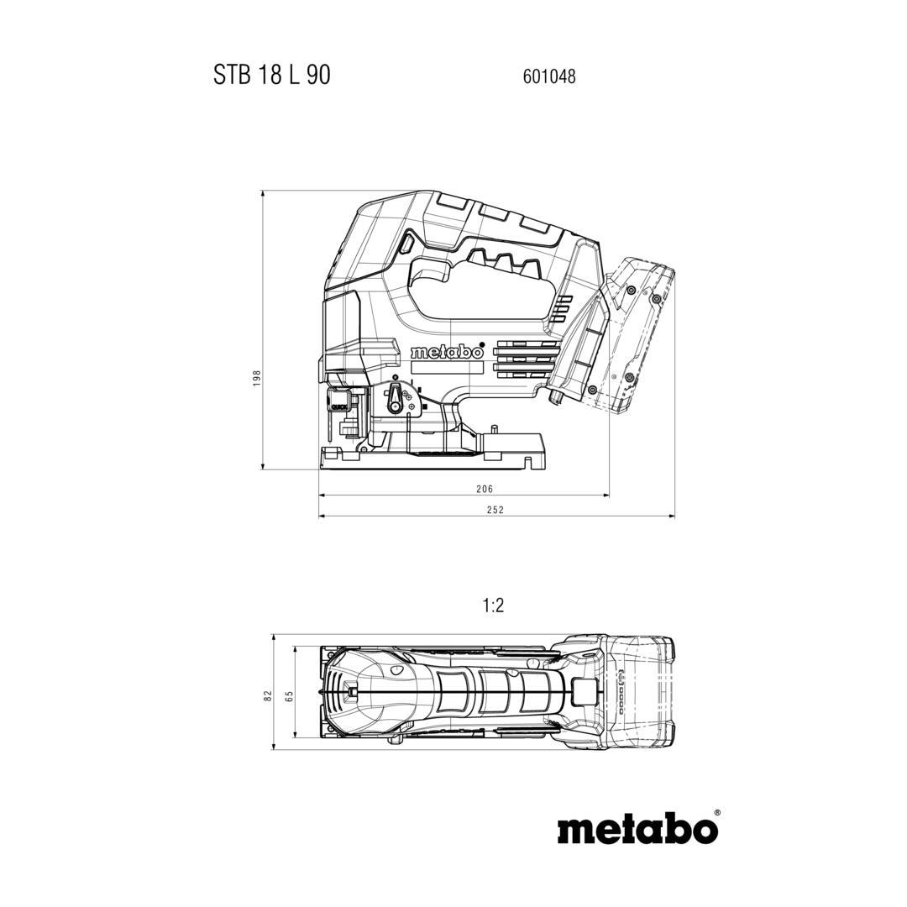
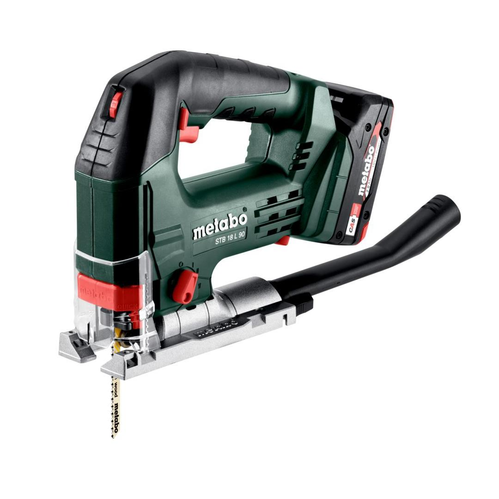
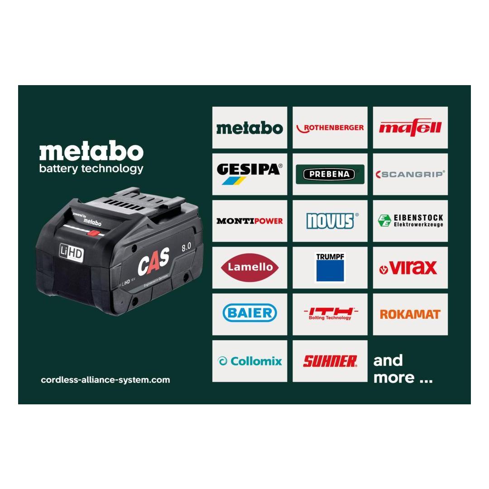

601048840






| Battery voltage | 18 V |
| Cutting depth wood | 90 mm / 3 9/16 " |
| Strokes in idle | 700 - 3000 rpm |
without key - quick, comfortable and safe
selectable pendulum stroke for optimum sawing performance in any material.
prevents unintentional start-up after power supply interruption
fast brake for increased safety with fast stopping of the tool used.
| Battery voltage | 18 V |
| Cutting depth wood | 90 mm / 3 9/16 " |
| Cutting depth NF metal | 25 mm / 1 " |
| Cutting depth sheet steel | 10 mm / 3/8 " |
| Swivel range from / to: | - 45 / + 45 ° |
| Pendulum stroke levels | 4 |
| Strokes in idle | 700 - 3000 rpm |
| Saw blade stroke | 22 mm / 7/8 " |
| Weight without battery pack | 1.6 kg |
| Weight with battery pack | 2 kg |
| Sawing wood | 4 m/s² |
| Uncertainty of measurement K | 1.5 m/s² |
| Sawing metal | 6.3 m/s² |
| Uncertainty of measurement K | 1.5 m/s² |
| Sound pressure level | 90 dB(A) |
| Sound power level (LwA) | 98 dB(A) |
| Uncertainty of measurement K | 5 dB(A) |
| Extraction nozzle |
| Protective glass |
| Chip guard plate |
| 2 Jigsaw blades |
| Hexagonal wrench |
| metaBOX 145 L |
| without battery pack, without charger |